Niles Riding out
at the Kennels Niles and Nero took a ride out to the
kennels on Sunday.
Sunday is football day, so I asked Chrissie
to ride them, so
I could take pictures. They were both
very good for her, and we
think Niles might be ready for third flight
in another month or so.
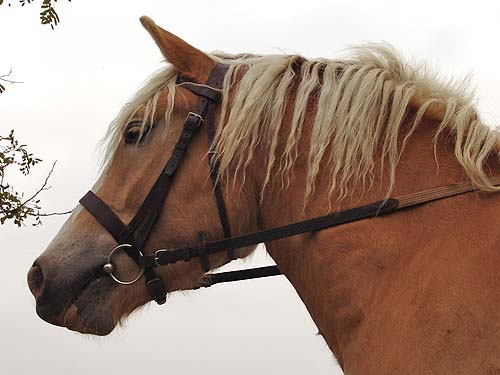
Pretty head shot. He's got a massive
neck, but is fairly soft and flexible.
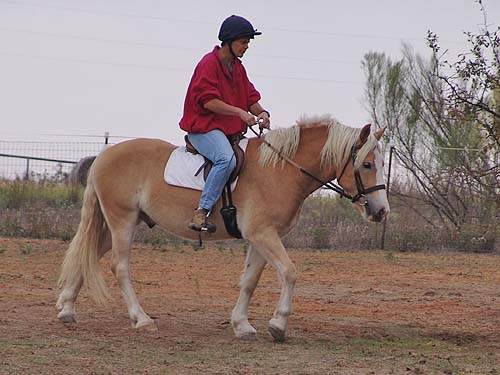
First Melanie, another hunt member,
got on him to see how it felt to be on a pony. She's 5'9", but said she
was comfortable on him.
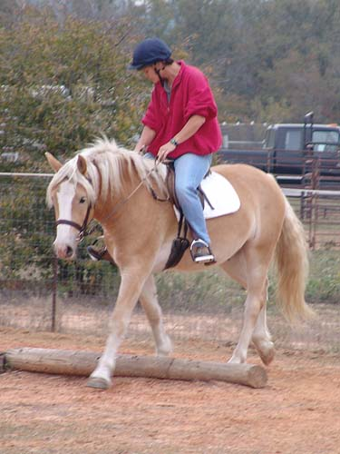
Over the pole.
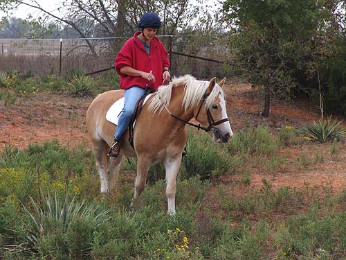
Through the tall weeds.
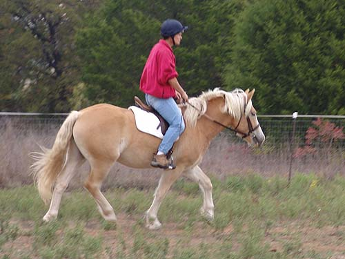
And a little trot.
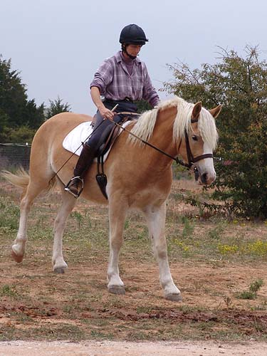
Chrissie got on him and introduced
him to a little stream.
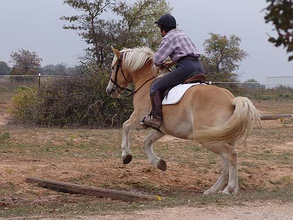
First he jumped it...
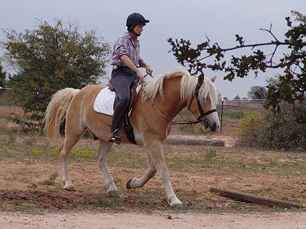
Then he trotted through...
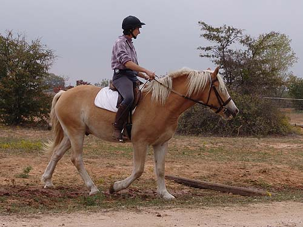
And then he got bored with it and
walked through.
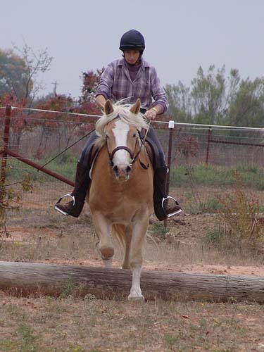
Trotting over a log.
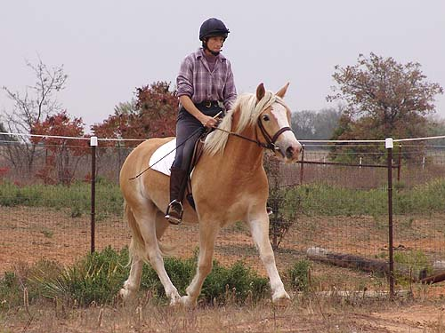
And trotting on.
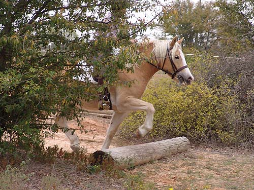
Picking up his feet, but not bothering
to jump.
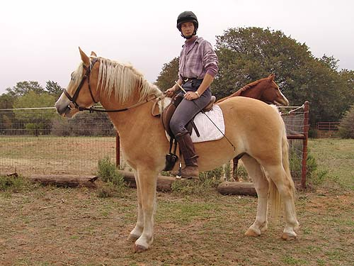
Standing is pretty easy for him. He
was a little distracted with the pretty mare in the pasture, but willingly
walked off and left his friends to go out on the trails.
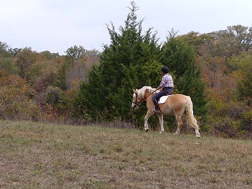
He neighed once or twice, but no silliness
on his own.
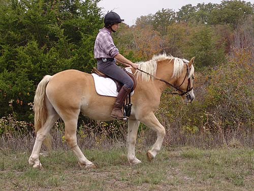
He was more forward on the trail,
and tried to pick up a trot a couple of times.
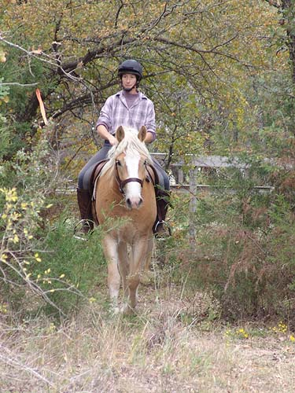
Riding through the trees. He still
needs work on his steering, but he figured out pretty quickly that it wasn't
smart to run into a tree.
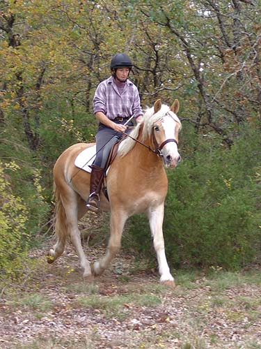
Trotting through the trees.
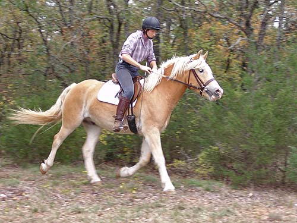
Sometimes he'd get a little eager
to trot on.
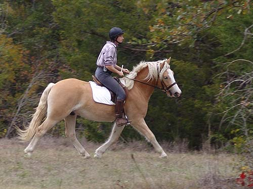
A nice trot, but reminding him that
there's a turn coming up.
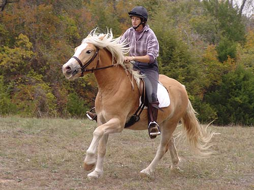
His first attempt at canter wasn't
very pretty. He wasn't sure if he was supposed to be cantering and everything
felt a little different.
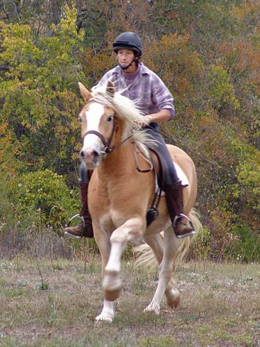
The second time he had more confidence
and didn't hollow or act worried. He knew what to expect and had a lovely
canter up the hill.